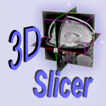
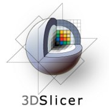

| Introduction | Downloading Slicer | Accessing Source Code | Slicer Mailing Lists | Learn how to use Slicer 2.6 | Additional Information for Developers | License |
The 3D Slicer (or simply Slicer) software was initially developed as a joint effort between the Surgical Planning Lab at Brigham and Women's Hospital and at the MIT AI Lab. The program has evolved into a national plattform supported by a variety of federal funding sources. This versatile research environment has resulted in a wide array of functionality, supporting a variety of medical imaging projects.
Slicer is a "point and click" end-user application. Slicer is used as a vehicle for delivering algorithms to computer scientists, biomedical researchers and clinical investigators. Slicer is distributed under an open source license without a reciprocity requirement and without restrictions on use. For a sampling of the portfolio of applications, please see the Slicer Gallery page.
|
Slicer is listed on the NCIA page under Tools, DICOM Image Viewers, on the left. Download this version of Slicer: Slicer 2.6. Use this tutorial to get you started: Slicer Training 1: Loading and Viewing Data and sample data set. NCIA specific tutorial. |
Slicer is expected to evolve dynamically in architecture and implementation by drawing on the expertise and effort of the wider NA-MIC, NAC, BIRN and NCIGT communities. The NA-MIC software engineering methodology, as applied to the problems which Slicer has historically addressed, is expected to result in a cleaner architecture that is easier for developers to support and extend.
Major funding for Slicer was provided through a variety of federal and private funding sources, including NCRR, NIBIB, Roadmap, NCI, NSF, DOD and others.
|  |  |
|
Slicer 2 is the released product
|
Slicer3 beta was released in January 2007
|
The source code for Slicer 2 is located in a CVS repository. To do an anonymous checkout of the Slicer2 source, run the following command:
cvs -d :pserver:anonymous@cvs.spl.harvard.edu:/projects/cvs/slicer login
Enter 'bwhspl' as the password and then
cvs -z3 -d :pserver:anonymous@cvs.spl.harvard.edu:/projects/cvs/slicer checkout slicer2
To browse the Slicer2 code through the ViewVC web interface, go to:
http://www.na-mic.org/ViewVC/index.cgi/slicer2/?root=Slicer2
The source code for Slicer3 is located in a Subversion repository. To checkout the Slicer3 source, run the following command:
svn co http://www.na-mic.org/svn/Slicer3/trunk Slicer3
To browse the Slicer3 code through the ViewVC web interface, go to:
http://www.na-mic.org/ViewVC/index.cgi/
Questions about running Slicer can be sent to the Slicer User's Mailing List. Archives of slicer-users and subscription management tools are available at:
http://massmail.spl.harvard.edu/mailman/listinfo/slicer-users
Slicer compilation/development questions can be sent to the Slicer Developer's Mailing List. Archives of slicer-devel and subscription management tools are available at:
http://massmail.spl.harvard.edu/mailman/listinfo/slicer-devel
Information for Slicer3 Developers
Summary: The 3D Slicer software is distributed under a license that is essentially a BSD-style, open source license. The license is an open source license compatible with the definition in opensource.org and contains no restrictions on use of the software. for all the legal specifics, please see the full text below.
3D Slicer Software License Agreement(c)
3D Slicer Contribution and Software License Agreement ("Agreement") Version 1.0 (December 20, 2005)
This Agreement covers contributions to and downloads from the 3D Slicer project ("Slicer") maintained by The Brigham and Women's Hospital, Inc. ("Brigham"). Part A of this Agreement applies to contributions of software and/or data to Slicer (including making revisions of or additions to code and/or data already in Slicer). Part B of this Agreement applies to downloads of software and/or data from Slicer. Part C of this Agreement applies to all transactions with Slicer. If you distribute Software (as defined below) downloaded from Slicer, all of the paragraphs of Part B of this Agreement must be included with and apply to such Software.
Your contribution of software and/or data to Slicer (including prior to the date of the first publication of this Agreement, each a "Contribution") and/or downloading, copying, modifying, displaying, distributing or use of any software and/or data from Slicer (collectively, the "Software") constitutes acceptance of all of the terms and conditions of this Agreement. If you do not agree to such terms and conditions, you have no right to contribute your Contribution, or to download, copy, modify, display, distribute or use the Software.
PART A. CONTRIBUTION AGREEMENT - License to Brigham with Right to Sublicense ("Contribution Agreement").
1. As used in this Contribution Agreement, "you" means the individual contributing the Contribution to Slicer and the institution or entity which employs or is otherwise affiliated with such individual in connection with such Contribution.
2. This Contribution Agreement applies to all Contributions made to Slicer, including without limitation Contributions made prior to the date of first publication of this Agreement. If at any time you make a Contribution to Slicer, you represent that (i) you are legally authorized and entitled to make such Contribution and to grant all licenses granted in this Contribution Agreement with respect to such Contribution; (ii) if your Contribution includes any patient data, all such data is de-identified in accordance with U.S. confidentiality and security laws and requirements, including but not limited to the Health Insurance Portability and Accountability Act (HIPAA) and its regulations, and your disclosure of such data for the purposes contemplated by this Agreement is properly authorized and in compliance with all applicable laws and regulations; and (iii) you have preserved in the Contribution all applicable attributions, copyright notices and licenses for any third party software or data included in the Contribution.
3. Except for the licenses granted in this Agreement, you reserve all right, title and interest in your Contribution.
4. You hereby grant to Brigham, with the right to sublicense, a perpetual, worldwide, non-exclusive, no charge, royalty-free, irrevocable license to use, reproduce, make derivative works of, display and distribute the Contribution. If your Contribution is protected by patent, you hereby grant to Brigham, with the right to sublicense, a perpetual, worldwide, non-exclusive, no-charge, royalty-free, irrevocable license under your interest in patent rights covering the Contribution, to make, have made, use, sell and otherwise transfer your Contribution, alone or in combination with any other code.
5. You acknowledge and agree that Brigham may incorporate your Contribution into Slicer and may make Slicer available to members of the public on an open source basis under terms substantially in accordance with the Software License set forth in Part B of this Agreement. You further acknowledge and agree that Brigham shall have no liability arising in connection with claims resulting from your breach of any of the terms of this Agreement.
6. YOU WARRANT THAT TO THE BEST OF YOUR KNOWLEDGE YOUR CONTRIBUTION DOES NOT CONTAIN ANY CODE THAT REQURES OR PRESCRIBES AN "OPEN SOURCE LICENSE" FOR DERIVATIVE WORKS (by way of non-limiting example, the GNU General Public License or other so-called "reciprocal" license that requires any derived work to be licensed under the GNU General Public License or other "open source license").
PART B. DOWNLOADING AGREEMENT - License from Brigham with Right to Sublicense ("Software License").
1. As used in this Software License, "you" means the individual downloading and/or using, reproducing, modifying, displaying and/or distributing the Software and the institution or entity which employs or is otherwise affiliated with such individual in connection therewith. The Brigham and Women?s Hospital, Inc. ("Brigham") hereby grants you, with right to sublicense, with respect to Brigham's rights in the software, and data, if any, which is the subject of this Software License (collectively, the "Software"), a royalty-free, non-exclusive license to use, reproduce, make derivative works of, display and distribute the Software, provided that:
(a) you accept and adhere to all of the terms and conditions of this Software License;
(b) in connection with any copy of or sublicense of all or any portion of the Software, all of the terms and conditions in this Software License shall appear in and shall apply to such copy and such sublicense, including without limitation all source and executable forms and on any user documentation, prefaced with the following words: "All or portions of this licensed product (such portions are the "Software") have been obtained under license from The Brigham and Women's Hospital, Inc. and are subject to the following terms and conditions:"
(c) you preserve and maintain all applicable attributions, copyright notices and licenses included in or applicable to the Software;
(d) modified versions of the Software must be clearly identified and marked as such, and must not be misrepresented as being the original Software; and
(e) you consider making, but are under no obligation to make, the source code of any of your modifications to the Software freely available to others on an open source basis.
2. The license granted in this Software License includes without limitation the right to (i) incorporate the Software into proprietary programs (subject to any restrictions applicable to such programs), (ii) add your own copyright statement to your modifications of the Software, and (iii) provide additional or different license terms and conditions in your sublicenses of modifications of the Software; provided that in each case your use, reproduction or distribution of such modifications otherwise complies with the conditions stated in this Software License.
3. This Software License does not grant any rights with respect to third party software, except those rights that Brigham has been authorized by a third party to grant to you, and accordingly you are solely responsible for (i) obtaining any permissions from third parties that you need to use, reproduce, make derivative works of, display and distribute the Software, and (ii) informing your sublicensees, including without limitation your end-users, of their obligations to secure any such required permissions.
4. The Software has been designed for research purposes only and has not been reviewed or approved by the Food and Drug Administration or by any other agency. YOU ACKNOWLEDGE AND AGREE THAT CLINICAL APPLICATIONS ARE NEITHER RECOMMENDED NOR ADVISED. Any commercialization of the Software is at the sole risk of the party or parties engaged in such commercialization. You further agree to use, reproduce, make derivative works of, display and distribute the Software in compliance with all applicable governmental laws, regulations and orders, including without limitation those relating to export and import control.
5. The Software is provided "AS IS" and neither Brigham nor any contributor to the software (each a "Contributor") shall have any obligation to provide maintenance, support, updates, enhancements or modifications thereto. BRIGHAM AND ALL CONTRIBUTORS SPECIFICALLY DISCLAIM ALL EXPRESS AND IMPLIED WARRANTIES OF ANY KIND INCLUDING, BUT NOT LIMITED TO, ANY WARRANTIES OF MERCHANTABILITY, FITNESS FOR A PARTICULAR PURPOSE AND NON-INFRINGEMENT. IN NO EVENT SHALL BRIGHAM OR ANY CONTRIBUTOR BE LIABLE TO ANY PARTY FOR DIRECT, INDIRECT, SPECIAL, INCIDENTAL, EXEMPLARY OR CONSEQUENTIAL DAMAGES HOWEVER CAUSED AND ON ANY THEORY OF LIABILITY ARISING IN ANY WAY RELATED TO THE SOFTWARE, EVEN IF BRIGHAM OR ANY CONTRIBUTOR HAS BEEN ADVISED OF THE POSSIBILITY OF SUCH DAMAGES. TO THE MAXIMUM EXTENT NOT PROHIBITED BY LAW OR REGULATION, YOU FURTHER ASSUME ALL LIABILITY FOR YOUR USE, REPRODUCTION, MAKING OF DERIVATIVE WORKS, DISPLAY, LICENSE OR DISTRIBUTION OF THE SOFTWARE AND AGREE TO INDEMNIFY AND HOLD HARMLESS BRIGHAM AND ALL CONTRIBUTORS FROM AND AGAINST ANY AND ALL CLAIMS, SUITS, ACTIONS, DEMANDS AND JUDGMENTS ARISING THEREFROM.
6. None of the names, logos or trademarks of Brigham or any of Brigham's affiliates or any of the Contributors, or any funding agency, may be used to endorse or promote products produced in whole or in part by operation of the Software or derived from or based on the Software without specific prior written permission from the applicable party.
7. Any use, reproduction or distribution of the Software which is not in accordance with this Software License shall automatically revoke all rights granted to you under this Software License and render Paragraphs 1 and 2 of this Software License null and void.
8. This Software License does not grant any rights in or to any intellectual property owned by Brigham or any Contributor except those rights expressly granted hereunder.
PART C. MISCELLANEOUS
This Agreement shall be governed by and construed in accordance with the laws of The Commonwealth of Massachusetts without regard to principles of conflicts of law. This Agreement shall supercede and replace any license terms that you may have agreed to previously with respect to Slicer.